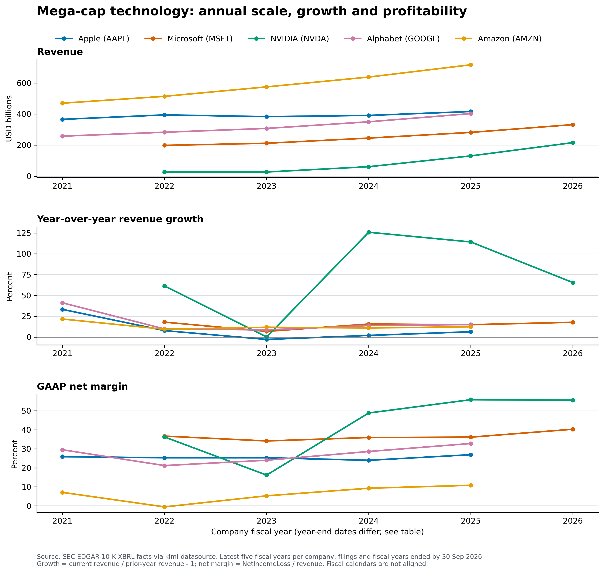

Scale is not growth.
Growth is not margin.
Annual revenue, year-over-year revenue growth and GAAP net margin for Apple, Microsoft, NVIDIA, Alphabet and Amazon.
Amazon has the largest latest-year revenue base; NVIDIA leads both latest-year revenue growth and net margin.
Latest eligible fiscal year by company
Fiscal years are not calendar-aligned. “Latest” means the newest 10-K with both filing date and fiscal-year end on or before the cutoff.
| Company | Ticker | Fiscal year | Fiscal-year end | Revenue (USD bn) | YoY growth | Net margin |
|---|---|---|---|---|---|---|
| Apple | AAPL | FY2025 | 2025-09-27 | 416.2 | 6.4% | 26.9% |
| Microsoft | MSFT | FY2026 | 2026-06-30 | 331.8 | 17.8% | 40.3% |
| NVIDIA | NVDA | FY2026 | 2026-01-25 | 215.9 | 65.5% | 55.6% |
| Alphabet | GOOGL | FY2025 | 2025-12-31 | 402.8 | 15.1% | 32.8% |
| Amazon | AMZN | FY2025 | 2025-12-31 | 716.9 | 12.4% | 10.8% |

Five-year annual history
Revenue is shown in USD billions. Growth uses the preceding fiscal year, including a baseline year retained in the source records. Net margin is NetIncomeLoss divided by revenue.
| Ticker | Fiscal year | Fiscal-year end | Revenue (USD bn) | YoY growth | Net margin |
|---|---|---|---|---|---|
| AAPL | FY2021 | 2021-09-25 | 365.8 | 33.3% | 25.9% |
| AAPL | FY2022 | 2022-09-24 | 394.3 | 7.8% | 25.3% |
| AAPL | FY2023 | 2023-09-30 | 383.3 | -2.8% | 25.3% |
| AAPL | FY2024 | 2024-09-28 | 391.0 | 2.0% | 24.0% |
| AAPL | FY2025 | 2025-09-27 | 416.2 | 6.4% | 26.9% |
| MSFT | FY2022 | 2022-06-30 | 198.3 | 18.0% | 36.7% |
| MSFT | FY2023 | 2023-06-30 | 211.9 | 6.9% | 34.1% |
| MSFT | FY2024 | 2024-06-30 | 245.1 | 15.7% | 36.0% |
| MSFT | FY2025 | 2025-06-30 | 281.7 | 14.9% | 36.1% |
| MSFT | FY2026 | 2026-06-30 | 331.8 | 17.8% | 40.3% |
| NVDA | FY2022 | 2022-01-30 | 26.9 | 61.4% | 36.2% |
| NVDA | FY2023 | 2023-01-29 | 27.0 | 0.2% | 16.2% |
| NVDA | FY2024 | 2024-01-28 | 60.9 | 125.9% | 48.8% |
| NVDA | FY2025 | 2025-01-26 | 130.5 | 114.2% | 55.8% |
| NVDA | FY2026 | 2026-01-25 | 215.9 | 65.5% | 55.6% |
| GOOGL | FY2021 | 2021-12-31 | 257.6 | 41.2% | 29.5% |
| GOOGL | FY2022 | 2022-12-31 | 282.8 | 9.8% | 21.2% |
| GOOGL | FY2023 | 2023-12-31 | 307.4 | 8.7% | 24.0% |
| GOOGL | FY2024 | 2024-12-31 | 350.0 | 13.9% | 28.6% |
| GOOGL | FY2025 | 2025-12-31 | 402.8 | 15.1% | 32.8% |
| AMZN | FY2021 | 2021-12-31 | 469.8 | 21.7% | 7.1% |
| AMZN | FY2022 | 2022-12-31 | 514.0 | 9.4% | -0.5% |
| AMZN | FY2023 | 2023-12-31 | 574.8 | 11.8% | 5.3% |
| AMZN | FY2024 | 2024-12-31 | 638.0 | 11.0% | 9.3% |
| AMZN | FY2025 | 2025-12-31 | 716.9 | 12.4% | 10.8% |
Sources, definitions and verification
Source of record
SEC EDGAR 10-K filings and XBRL facts retrieved through kimi-datasource. Original annual filings are matched by CIK, fiscal year and accession; later comparative duplicates are excluded.
Definitions
Revenue uses the reported annual consolidated value. Net margin uses GAAP NetIncomeLoss attributable to parent. Growth = current / prior fiscal-year revenue − 1. No estimates or adjustments.
Comparability
Company fiscal years end on different dates and can span 52 or 53 weeks. Latest-year comparisons therefore cover different economic periods.
Completed checks
- 25 annual rows: five fiscal years for each of five companies.
- 30 retained source periods, including each company's prior-year growth baseline.
- Revenue and NetIncomeLoss match original 10-K accession, period end, USD unit and annual duration.
- All selected fiscal-year end dates and filing dates are on or before 30 September 2026.
- Every revenue-growth and net-margin value independently recomputed from retained USD inputs.
- Latest-year revenue and net income for all five firms match separate structured income-statement extracts.
- No missing revenue, growth or net-margin values in the 25-row annual table.
Show retained 10-K source records (25 annual rows)
| Ticker | Fiscal year | Fiscal-year end | Filed | Form | Accession / SEC source | Revenue concept | Net income concept |
|---|---|---|---|---|---|---|---|
| AAPL | FY2021 | 2021-09-25 | 2021-10-29 | 10-K | 0000320193-21-000105 | us-gaap:RevenueFromContractWithCustomerExcludingAssessedTax | us-gaap:NetIncomeLoss |
| AAPL | FY2022 | 2022-09-24 | 2022-10-28 | 10-K | 0000320193-22-000108 | us-gaap:RevenueFromContractWithCustomerExcludingAssessedTax | us-gaap:NetIncomeLoss |
| AAPL | FY2023 | 2023-09-30 | 2023-11-03 | 10-K | 0000320193-23-000106 | us-gaap:RevenueFromContractWithCustomerExcludingAssessedTax | us-gaap:NetIncomeLoss |
| AAPL | FY2024 | 2024-09-28 | 2024-11-01 | 10-K | 0000320193-24-000123 | us-gaap:RevenueFromContractWithCustomerExcludingAssessedTax | us-gaap:NetIncomeLoss |
| AAPL | FY2025 | 2025-09-27 | 2025-10-31 | 10-K | 0000320193-25-000079 | us-gaap:RevenueFromContractWithCustomerExcludingAssessedTax | us-gaap:NetIncomeLoss |
| MSFT | FY2022 | 2022-06-30 | 2022-07-28 | 10-K | 0001564590-22-026876 | us-gaap:RevenueFromContractWithCustomerExcludingAssessedTax | us-gaap:NetIncomeLoss |
| MSFT | FY2023 | 2023-06-30 | 2023-07-27 | 10-K | 0000950170-23-035122 | us-gaap:RevenueFromContractWithCustomerExcludingAssessedTax | us-gaap:NetIncomeLoss |
| MSFT | FY2024 | 2024-06-30 | 2024-07-30 | 10-K | 0000950170-24-087843 | us-gaap:RevenueFromContractWithCustomerExcludingAssessedTax | us-gaap:NetIncomeLoss |
| MSFT | FY2025 | 2025-06-30 | 2025-07-30 | 10-K | 0000950170-25-100235 | us-gaap:RevenueFromContractWithCustomerExcludingAssessedTax | us-gaap:NetIncomeLoss |
| MSFT | FY2026 | 2026-06-30 | 2026-07-29 | 10-K | 0001193125-26-323660 | us-gaap:RevenueFromContractWithCustomerExcludingAssessedTax | us-gaap:NetIncomeLoss |
| NVDA | FY2022 | 2022-01-30 | 2022-03-18 | 10-K | 0001045810-22-000036 | us-gaap:RevenueFromContractWithCustomerExcludingAssessedTax;us-gaap:Revenues | us-gaap:NetIncomeLoss |
| NVDA | FY2023 | 2023-01-29 | 2023-02-24 | 10-K | 0001045810-23-000017 | us-gaap:Revenues | us-gaap:NetIncomeLoss |
| NVDA | FY2024 | 2024-01-28 | 2024-02-21 | 10-K | 0001045810-24-000029 | us-gaap:Revenues | us-gaap:NetIncomeLoss |
| NVDA | FY2025 | 2025-01-26 | 2025-02-26 | 10-K | 0001045810-25-000023 | us-gaap:Revenues | us-gaap:NetIncomeLoss |
| NVDA | FY2026 | 2026-01-25 | 2026-02-25 | 10-K | 0001045810-26-000021 | us-gaap:Revenues | us-gaap:NetIncomeLoss |
| GOOGL | FY2021 | 2021-12-31 | 2022-02-02 | 10-K | 0001652044-22-000019 | us-gaap:Revenues | us-gaap:NetIncomeLoss |
| GOOGL | FY2022 | 2022-12-31 | 2023-02-03 | 10-K | 0001652044-23-000016 | us-gaap:RevenueFromContractWithCustomerExcludingAssessedTax | us-gaap:NetIncomeLoss |
| GOOGL | FY2023 | 2023-12-31 | 2024-01-31 | 10-K | 0001652044-24-000022 | us-gaap:RevenueFromContractWithCustomerExcludingAssessedTax | us-gaap:NetIncomeLoss |
| GOOGL | FY2024 | 2024-12-31 | 2025-02-05 | 10-K | 0001652044-25-000014 | us-gaap:RevenueFromContractWithCustomerExcludingAssessedTax | us-gaap:NetIncomeLoss |
| GOOGL | FY2025 | 2025-12-31 | 2026-02-05 | 10-K | 0001652044-26-000018 | us-gaap:Revenues | us-gaap:NetIncomeLoss |
| AMZN | FY2021 | 2021-12-31 | 2022-02-04 | 10-K | 0001018724-22-000005 | us-gaap:RevenueFromContractWithCustomerExcludingAssessedTax | us-gaap:NetIncomeLoss |
| AMZN | FY2022 | 2022-12-31 | 2023-02-03 | 10-K | 0001018724-23-000004 | us-gaap:RevenueFromContractWithCustomerExcludingAssessedTax | us-gaap:NetIncomeLoss |
| AMZN | FY2023 | 2023-12-31 | 2024-02-02 | 10-K | 0001018724-24-000008 | us-gaap:RevenueFromContractWithCustomerExcludingAssessedTax | us-gaap:NetIncomeLoss |
| AMZN | FY2024 | 2024-12-31 | 2025-02-07 | 10-K | 0001018724-25-000004 | us-gaap:RevenueFromContractWithCustomerExcludingAssessedTax | us-gaap:NetIncomeLoss |
| AMZN | FY2025 | 2025-12-31 | 2026-02-06 | 10-K | 0001018724-26-000004 | us-gaap:RevenueFromContractWithCustomerExcludingAssessedTax | us-gaap:NetIncomeLoss |